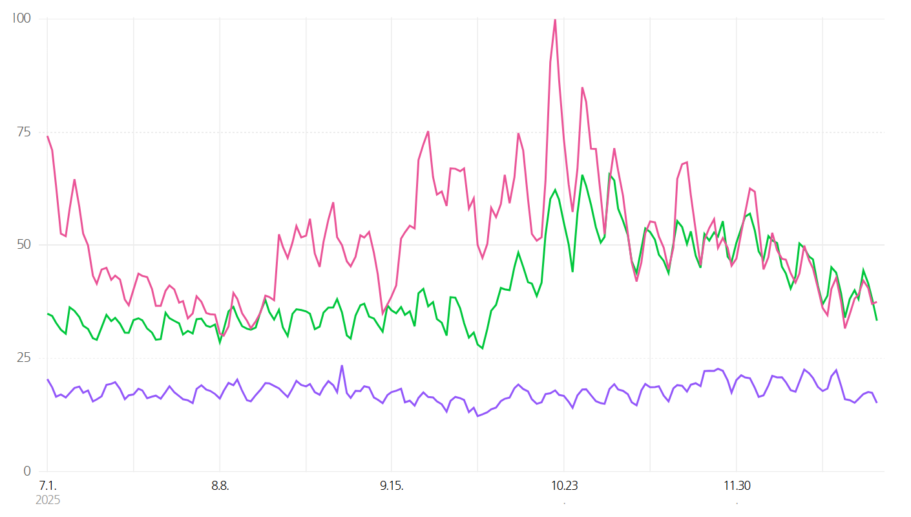
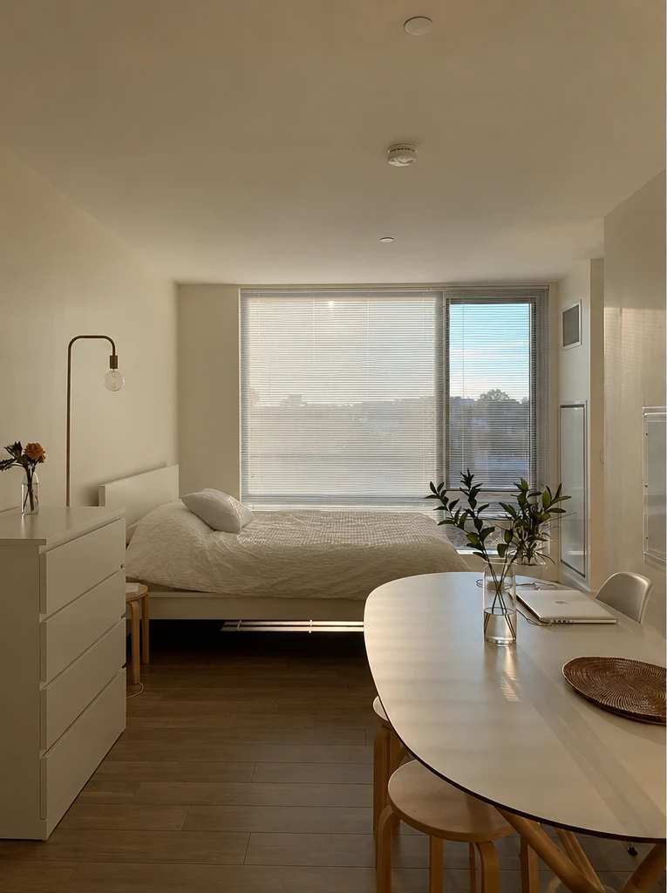
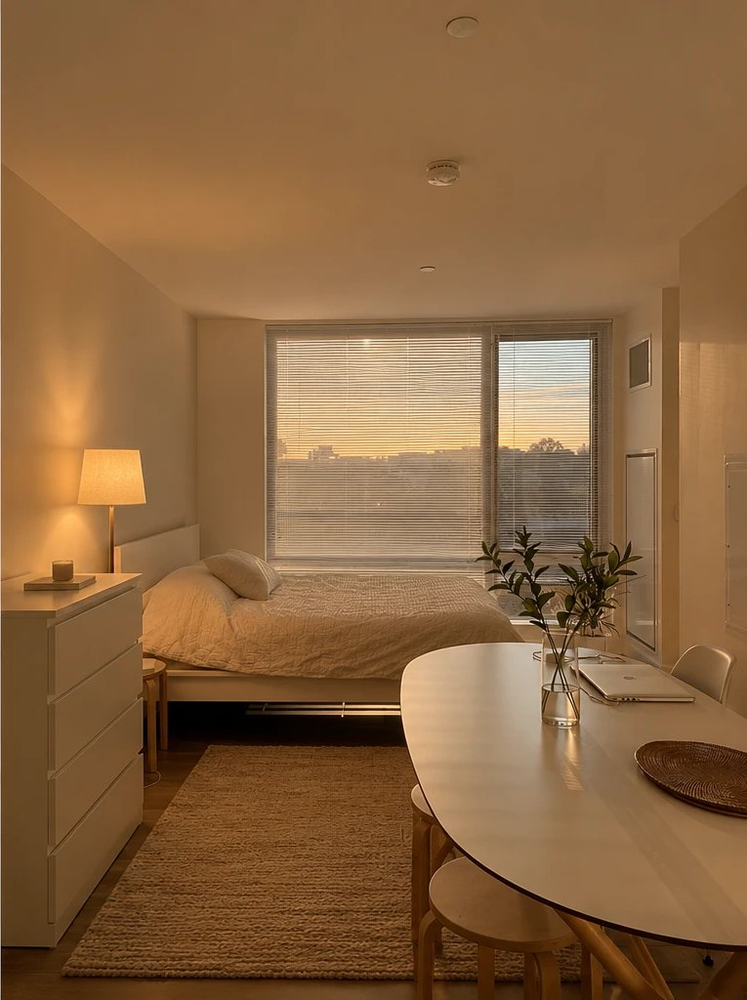

서비스 분석
7월엔 괜찮던 방이 10월엔 왜 허전해 보일까
방은 그대로인데 계절이 바뀌었을 때, 공사 대신 소품으로 온도를 바꾸는 법
3줄 요약
- 가을이 되면 멀쩡하던 방이 허전해 보이는 건 흔한 일이에요.
- 이유는 방이 아니라 계절이에요. 따뜻한 색과 질감이 필요해지는 때거든요.
- 해결은 공사가 아니라 러그, 블랭킷, 조명 같은 작은 소품이에요.
방은 그대로인데 낯설었어요
요즘 캐나다는 해가 빨리 져요. 최근 저녁, 날씨가 부쩍 쌀쌀해지고 나서 방이 허전하게 느껴졌어요. 가구도 그대로고 배치도 그대로인데 왠지 낯설었어요.
물론 저는 홈스테이라 뭘 사서 바꾸거나 가구 배치를 바꾸기는 쉽지 않아요. 그래도 궁금했어요. 여기가 한국의 내 방이었다면, 어떻게 바꿨을까? 찾아보니 답은 공사가 아니라 작은 소품 쪽에 있었어요.
가을엔 방도 옷을 갈아입어요
미국 캘리포니아 오렌지카운티의 매거진 Blue Door는 가을이 되면 따뜻한 색이 차가운 중립색 자리를 대신한다고 해요. 그래서 7월에는 딱 알맞던 미니멀한 방이 10월에는 조금 '덜 끝난' 것처럼 보일 수 있대요. 미국 기준의 분석이지만, 방은 그대로인데 낯설게 느껴지는 이 감각에 이름을 붙여 줘요.
디자이너들 생각도 비슷해요. 1stDibs가 17개국 디자이너 수백 명에게 물었더니 39%가 맥시멀리즘과 레이어링된 인테리어가 올해도 인기일 거라고 답했어요.
보그 코리아가 소개한 올해 인테리어 키워드 역시 사람이 실제로 살며 사랑하는, 생활감이 느껴지는 집이에요.
세 이야기를 합치면 이렇게 말할 수 있어요.
가을에는 비워 둔 방보다 하나씩 겹쳐 채운 방이 더 따뜻해 보여요.
작년 가을 검색량을 봤어요

- 러그러그, 매트, 카페트, 카펫, 거실러그, 원형러그, 침실러그, 단모러그, 장모러그
- 블랭킷블랭킷, 담요, 이불, 무릎담요, 니트블랭킷, 극세사담요, 소파덮개, 여름이불
- 무드등무드등, 수면등, 간접조명, 단스탠드, 장스탠드, 테이블조명, 침실조명, 인테리어조명, 탁상조명
숫자는 실제 검색 횟수가 아니라, 이 기간에 가장 많이 검색된 날을 100으로 놓은 상대값이에요.
작년 7월부터 11월까지 네이버 검색량이에요. 러그는 7~9월 내내 비슷한 수준이다가 10월로 접어들며 눈에 띄게 올라갔고, 블랭킷은 10월 하순에 가장 높은 값을 찍었어요. 이 시기에 허전함을 느낀 게 저만은 아닌 것 같아요.
반면 무드등은 이 기간 내내 거의 일정해요. 조명은 계절을 덜 타는 기본템이라서 그런 것 같아요.
저는 이걸 이렇게 읽었어요. 방을 다 뜯어고칠 순 없으니, 언제나 통하는 조명에 확실한 가을 시즌템인 러그, 블랭킷을 더하는 것만으로도 공간의 온도를 바꿀 수 있겠구나.
방을 바꿀 수 없다면 소품을 삽니다
그래프를 보고 하나 더 생각해 봤어요. 가격이 그대로여도 가을이 되면 러그나 블랭킷의 수요가 늘어요. 값이 내려서가 아니라 계절 때문에 마음이 바뀐 거예요.
또 방 분위기를 바꾸는 방법은 공사도 있고 소품도 있어요. 둘은 서로 대신할 수 있는 대체재인데, 소품이 훨씬 싸고 간단해서 가을에는 소품 쪽으로 마음이 쏠려요.
오늘부터 해볼 수 있는 3가지
-
직물 겹치기
러그, 쿠션, 블랭킷이 대표적이에요. 한 번에 다 사지 말고 하나만 더해도 방의 계절이 달라져요.
-
질감 바꾸기
니트나 울처럼 도톰한 천, 나무나 도자기 같은 따뜻한 소재를 더하면 색을 바꾸지 않아도 방이 달라 보여요.
-
조명 바꾸기
해가 짧아진 저녁에는 방의 인상을 조명이 정해요. 따뜻한 전구색으로 바꾸고, 스탠드처럼 낮은 곳에 간접 조명을 하나 더해 보세요.

전
후제 방은 홈스테이라 전후 차이를 확인할 수 없어서 핀터레스트의 예시 사진을 가져왔어요. 가을 인테리어의 핵심은 비워 둔 방보다 '생활감'을 겹겹이 더하는 거예요.
차갑게 느껴지던 공간이 따뜻한 조명과 질감으로 포근하게 채워진 게 사진에서 보여요.
이 글의 한계
참고한 자료는 대부분 미국이나 영미권 이야기라, 좌식, 온돌, 평수가 다른 한국 집과는 맞지 않을 수 있어요. 트렌드 예측에는 그걸 전하는 매체의 시각도 섞여 있어요. 그리고 '덜 끝난' 느낌은 숫자가 아니라 개인의 감각이에요.
또한, 검색량 그래프는 작년 7~11월의 기록이고, 검색이 곧 구매는 아니에요. 저는 지금 캐나다 홈스테이에 있어서 한국 집에서 직접 확인한 것도 아니에요.
결론
계절이 바뀌는 때는 인테리어 플랫폼이 가장 쉽게 구매를 만들 수 있는 순간이라고 생각해요. 사람들은 집을 고치고 싶은 게 아니라 분위기를 바꾸고 싶은 거예요. 그때 필요한 건 상품 목록이 아니라 '뭘 사야 하지?'에 대한 답이에요. 계절을 타는 직물에 계절을 안 타는 조명을 묶은 세트가 그 답이 될 수 있을 것 같아요. 여러분의 방에는 지금 어떤 소품이 가장 필요한가요?